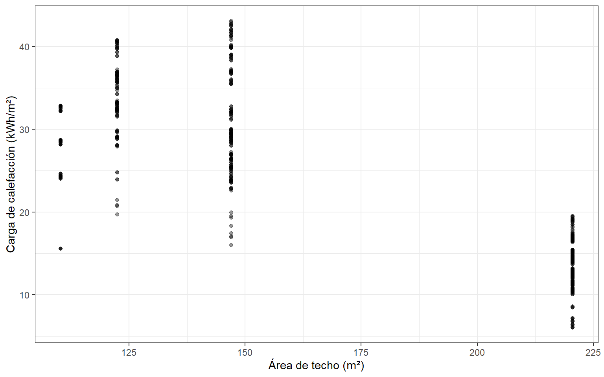
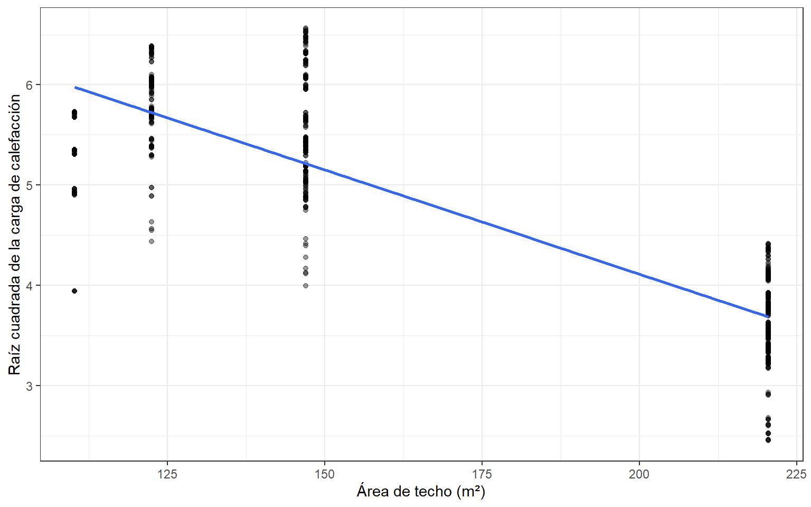
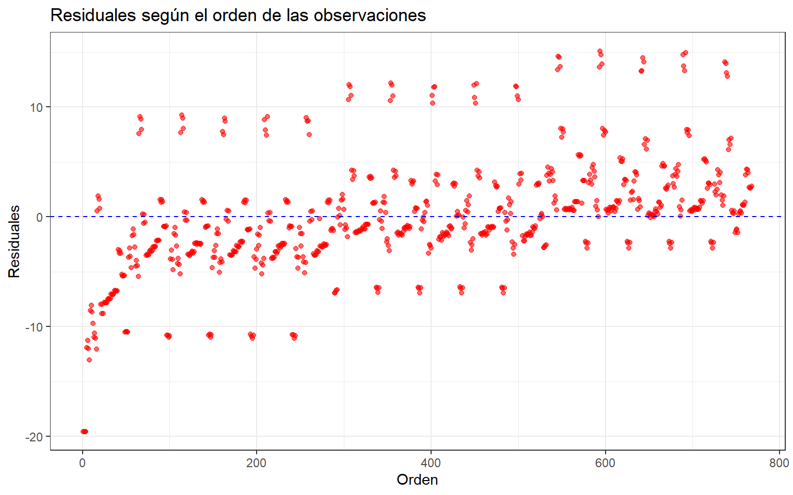
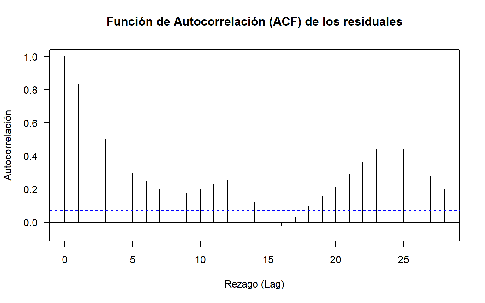
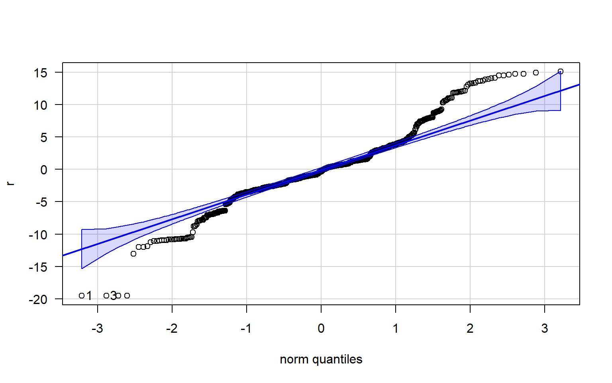
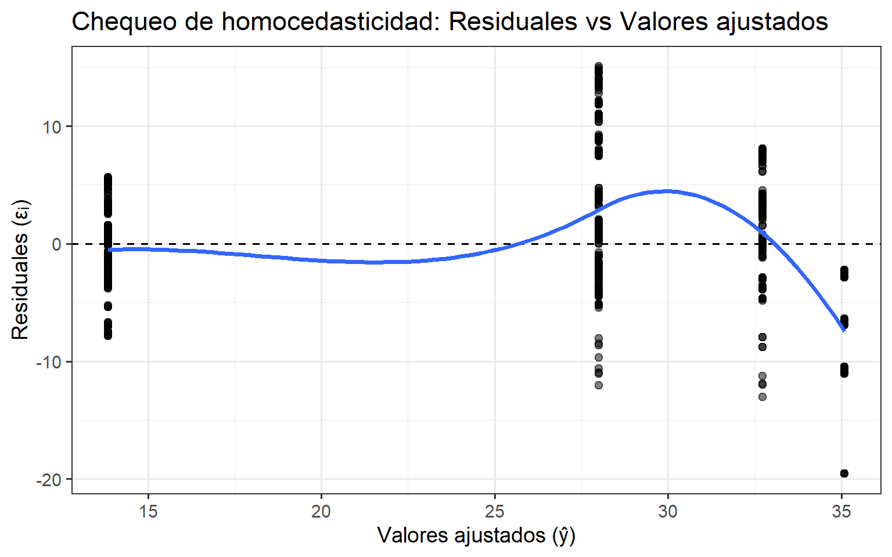
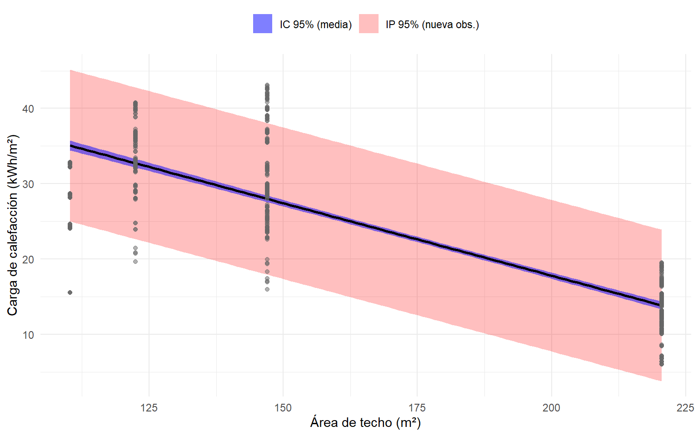

Chapter 8 Regresión lineal simple (RLS)
Ajustamos un modelo que explique la carga de calefacción usando solo el área de techo:
\[\text{Carga} = \beta_0 + \beta_1 \cdot \text{Techo} + \varepsilon\]
df %>%
ggplot(aes(x = area_techo, y = carga_calef)) +
geom_point(alpha = 0.4) +
labs(x = "Área de techo (m²)", y = "Carga de calefacción (kWh/m²)") +
theme_bw()
## [1] -0.86182818.1 Estimación del modelo
##
## Call:
## lm(formula = carga_calef ~ area_techo, data = df)
##
## Residuals:
## Min 1Q Median 3Q Max
## -19.5327 -2.6392 -0.3191 2.4997 15.0930
##
## Coefficients:
## Estimate Std. Error t value Pr(>|t|)
## (Intercept) 56.309657 0.746269 75.45 <2e-16 ***
## area_techo -0.192535 0.004094 -47.03 <2e-16 ***
## ---
## Signif. codes: 0 '***' 0.001 '**' 0.01 '*' 0.05 '.' 0.1 ' ' 1
##
## Residual standard error: 5.121 on 766 degrees of freedom
## Multiple R-squared: 0.7427, Adjusted R-squared: 0.7424
## F-statistic: 2212 on 1 and 766 DF, p-value: < 2.2e-16Interpretación: el modelo ajustado es:
\[\widehat{\text{Carga}} = 56.31 - 0.1925 \cdot \text{Techo}\]
- Pendiente (−0.1925): por cada metro cuadrado adicional de techo, la carga de calefacción esperada baja en 0.19 kWh/m². Dicho de forma más intuitiva, 10 m² más de techo significan unos 1.93 kWh/m² menos de calefacción. Esto pasa porque los edificios con más techo son los de un piso, que en estos datos necesitan menos energía.
- Intercepto (56.31): sería la carga esperada para un techo de 0 m². No tiene sentido práctico (ningún edificio tiene techo cero); solo sirve para ubicar la recta.
## [1] 5.121097## [1] 0.7427476Interpretación: el error estándar residual es 5.12 kWh/m²: en promedio, las predicciones del modelo se alejan unos 5 kWh/m² de la carga real. El R² = 0.743 indica que el área de techo, por sí sola, explica cerca del 74 % de la variación en la carga de calefacción. Es bastante para una sola variable, pero aún queda un 26 % sin explicar.
8.2 Inferencia sobre los coeficientes
## Estimate Std. Error t value Pr(>|t|)
## (Intercept) 56.3096574 0.746268959 75.45491 0.000000e+00
## area_techo -0.1925349 0.004094059 -47.02787 4.917422e-228## 2.5 % 97.5 %
## (Intercept) 54.8469972 57.7723177
## area_techo -0.2005591 -0.1845107Interpretación: ambos coeficientes son significativos al 5 % (p-valores prácticamente cero). Con un 95 % de confianza, por cada m² adicional de techo la carga baja entre 0.184 y 0.201 kWh/m². El intervalo no incluye el cero, así que la relación es real y no producto del azar.
## Analysis of Variance Table
##
## Response: carga_calef
## Df Sum Sq Mean Sq F value Pr(>F)
## area_techo 1 58001 58001 2211.6 < 2.2e-16 ***
## Residuals 766 20089 26
## ---
## Signif. codes: 0 '***' 0.001 '**' 0.01 '*' 0.05 '.' 0.1 ' ' 1Interpretación: la tabla ANOVA da F = 2211.6 con un p-valor prácticamente cero. El modelo es globalmente significativo: usar el área de techo para predecir la carga es mucho mejor que simplemente usar el promedio.
8.3 Transformaciones para mejorar el ajuste
Probamos si alguna transformación sencilla mejora el R².
mod_sqrt_y <- lm(sqrt(carga_calef) ~ area_techo, data = df)
mod_log_y <- lm(log(carga_calef) ~ area_techo, data = df)
mod_sqrt_x <- lm(carga_calef ~ sqrt(area_techo), data = df)
data.frame(
Modelo = c("carga ~ techo", "sqrt(carga) ~ techo",
"log(carga) ~ techo", "carga ~ sqrt(techo)"),
R2 = c(summary(modelo_rls)$r.squared,
summary(mod_sqrt_y)$r.squared,
summary(mod_log_y)$r.squared,
summary(mod_sqrt_x)$r.squared)
)## Modelo R2
## 1 carga ~ techo 0.7427476
## 2 sqrt(carga) ~ techo 0.7629644
## 3 log(carga) ~ techo 0.7596242
## 4 carga ~ sqrt(techo) 0.7282398df %>%
ggplot(aes(x = area_techo, y = sqrt(carga_calef))) +
geom_point(alpha = 0.4) +
geom_smooth(method = "lm", se = FALSE) +
labs(x = "Área de techo (m²)", y = "Raíz cuadrada de la carga de calefacción") +
theme_bw()
Interpretación: transformar la respuesta con raíz cuadrada (R² = 0.763) o logaritmo (R² = 0.760) mejora el ajuste solo un poco frente al modelo original (0.743). Transformar el área de techo lo empeora (0.728). Como la ganancia es pequeña y el modelo original se interpreta directamente en kWh/m², nos quedamos con el modelo sin transformar para la RLS.
8.4 Análisis de residuales y validación de supuestos
8.4.1 Independencia de los errores
res_df <- data.frame(Orden = 1:nrow(df), Residuales = residuals(modelo_rls))
ggplot(res_df, aes(x = Orden, y = Residuales)) +
geom_point(color = "red", size = 1.5, alpha = 0.6) +
geom_hline(yintercept = 0, linetype = "dashed", color = "blue") +
labs(title = "Residuales según el orden de las observaciones",
x = "Orden", y = "Residuales") +
theme_bw()
## lag Autocorrelation D-W Statistic p-value
## 1 0.8345978 0.3114266 0
## Alternative hypothesis: rho != 0r <- residuals(modelo_rls)
acf(
r,
main = "Función de Autocorrelación (ACF) de los residuales",
ylab = "Autocorrelación",
xlab = "Rezago (Lag)",
col = "black",
las = 1
)
Interpretación: el estadístico de Durbin-Watson es 0.31 (muy lejos de 2) y el p-valor es prácticamente cero, así que se rechaza la independencia: hay autocorrelación positiva fuerte. El ACF lo confirma, con barras que se salen de las bandas en muchos rezagos.
Aquí vale la pena entender el porqué. Estos datos no son una serie de tiempo: el archivo está ordenado de forma que cada edificio aparece cuatro veces seguidas, una por orientación. Como la orientación casi no cambia la carga, las filas vecinas son casi idénticas y sus residuos se parecen. La “dependencia” viene de cómo está ordenado el archivo más que de un problema real de los edificios, pero hay que reportarla.
8.4.2 Normalidad de los errores
##
## Shapiro-Wilk normality test
##
## data: r
## W = 0.95563, p-value = 1.834e-14
## [1] 1 3Interpretación: con W = 0.956 y p < 0.001, se rechaza la normalidad de los residuos. En el Q-Q plot, los puntos de los extremos se salen de las bandas. Con 768 datos, la inferencia sobre los coeficientes sigue siendo razonable, pero los intervalos de predicción hay que tomarlos con cautela.
8.4.3 Media cero de los errores
## [1] -8.450181e-16##
## One Sample t-test
##
## data: r
## t = -4.5758e-15, df = 767, p-value = 1
## alternative hypothesis: true mean is not equal to 0
## 95 percent confidence interval:
## -0.3625209 0.3625209
## sample estimates:
## mean of x
## -8.450181e-16Interpretación: la media de los residuos es prácticamente cero y la prueba da p = 1, así que se cumple el supuesto de media cero. Era de esperarse: cuando el modelo tiene intercepto, los residuos siempre promedian cero.
8.4.4 Varianza constante de los errores
diag_df <- data.frame(
Ajustados = fitted(modelo_rls),
Residuales = resid(modelo_rls)
)
ggplot(diag_df, aes(x = Ajustados, y = Residuales)) +
geom_point(size = 2, alpha = 0.5) +
geom_hline(yintercept = 0, linetype = "dashed") +
geom_smooth(method = "loess", se = FALSE, span = 0.9) +
labs(
title = "Chequeo de homocedasticidad: Residuales vs Valores ajustados",
x = "Valores ajustados (ŷ)",
y = "Residuales (εᵢ)"
) +
theme_bw(base_size = 14)
##
## studentized Breusch-Pagan test
##
## data: modelo_rls
## BP = 101.47, df = 1, p-value < 2.2e-16## Non-constant Variance Score Test
## Variance formula: ~ fitted.values
## Chisquare = 185.9688, Df = 1, p = < 2.22e-16Interpretación: en el gráfico, los residuos de la columna de la izquierda (edificios de un piso, con predicción baja) están mucho más apretados que los de la derecha. Las pruebas de Breusch-Pagan (BP = 101.5) y ncvTest (χ² = 186) dan p-valores prácticamente cero, así que se rechaza la varianza constante: hay heterocedasticidad. El modelo se equivoca más en los edificios de dos pisos, que es justo donde hay más variabilidad.
8.5 Estimación de la respuesta media e intervalo de predicción
Calculamos la carga para tres áreas de techo: la media (176.6 m²), 147 m² y 220.5 m².
xbar <- mean(df$area_techo)
predict(modelo_rls, newdata = data.frame(area_techo = c(xbar, 147, 220.5)),
interval = "confidence")## fit lwr upr
## 1 22.30720 21.94444 22.66995
## 2 28.00703 27.57321 28.44085
## 3 13.85572 13.34970 14.36173predict(modelo_rls, newdata = data.frame(area_techo = c(xbar, 147, 220.5)),
interval = "prediction")## fit lwr upr
## 1 22.30720 12.24760 32.36679
## 2 28.00703 17.94462 38.06944
## 3 13.85572 3.78994 23.92149x_nuevo <- data.frame(area_techo = c(xbar, 147, 220.5))
ic <- predict(modelo_rls, newdata = x_nuevo, interval = "confidence")
ip <- predict(modelo_rls, newdata = x_nuevo, interval = "prediction")
data.frame(area_techo = x_nuevo$area_techo,
fit = ic[, "fit"],
ancho_IC = ic[, "upr"] - ic[, "lwr"],
ancho_IP = ip[, "upr"] - ip[, "lwr"])## area_techo fit ancho_IC ancho_IP
## 1 176.6042 22.30720 0.7255163 20.11918
## 2 147.0000 28.00703 0.8676457 20.12481
## 3 220.5000 13.85572 1.0120316 20.13155Interpretación: para los edificios con 147 m² de techo:
- Intervalo de confianza: con un 95 % de confianza, la carga media de todos los edificios con ese techo está entre 27.57 y 28.44 kWh/m².
- Intervalo de predicción: si construimos un edificio nuevo con 147 m² de techo, su carga estará entre 17.94 y 38.07 kWh/m².
El intervalo de predicción es mucho más ancho (unos 20 kWh/m² frente a menos de 1) porque, además de la incertidumbre en la recta, incluye la variación natural de cada edificio. Predecir el promedio es fácil; predecir un edificio individual con una sola variable es bastante impreciso.
techo_g <- data.frame(area_techo = seq(min(df$area_techo), max(df$area_techo), length.out = 100))
ic_g <- predict(modelo_rls, newdata = techo_g, interval = "confidence")
ip_g <- predict(modelo_rls, newdata = techo_g, interval = "prediction")
bandas <- data.frame(area_techo = techo_g$area_techo,
fit = ic_g[, "fit"],
ic_lwr = ic_g[, "lwr"], ic_upr = ic_g[, "upr"],
ip_lwr = ip_g[, "lwr"], ip_upr = ip_g[, "upr"])
ggplot() +
geom_ribbon(data = bandas,
aes(x = area_techo, ymin = ip_lwr, ymax = ip_upr, fill = "IP 95% (nueva obs.)"),
alpha = 0.25) +
geom_ribbon(data = bandas,
aes(x = area_techo, ymin = ic_lwr, ymax = ic_upr, fill = "IC 95% (media)"),
alpha = 0.50) +
geom_line(data = bandas, aes(x = area_techo, y = fit), linewidth = 1) +
geom_point(data = df, aes(x = area_techo, y = carga_calef),
color = "gray40", alpha = 0.5) +
scale_fill_manual(values = c("IC 95% (media)" = "blue",
"IP 95% (nueva obs.)" = "red")) +
labs(x = "Área de techo (m²)", y = "Carga de calefacción (kWh/m²)", fill = NULL) +
theme_minimal() +
theme(legend.position = "top")
Interpretación: la banda azul (respuesta media) es muy angosta alrededor de la recta, mientras que la roja (nuevo edificio) es ancha y cubre casi todos los puntos. Se nota que la recta no capta del todo los datos: en 122.5 m² los edificios tienen cargas mayores que en 110.25 m², y la recta no puede reflejarlo. Una sola variable se queda corta, y eso nos lleva a la regresión múltiple.